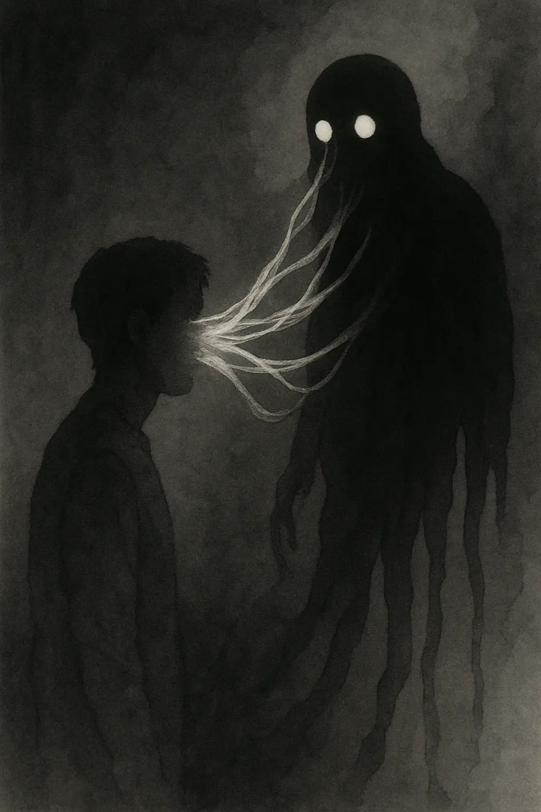
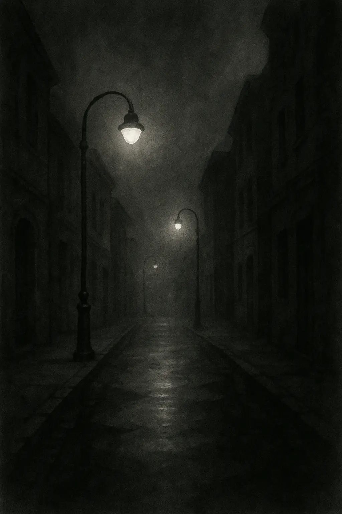
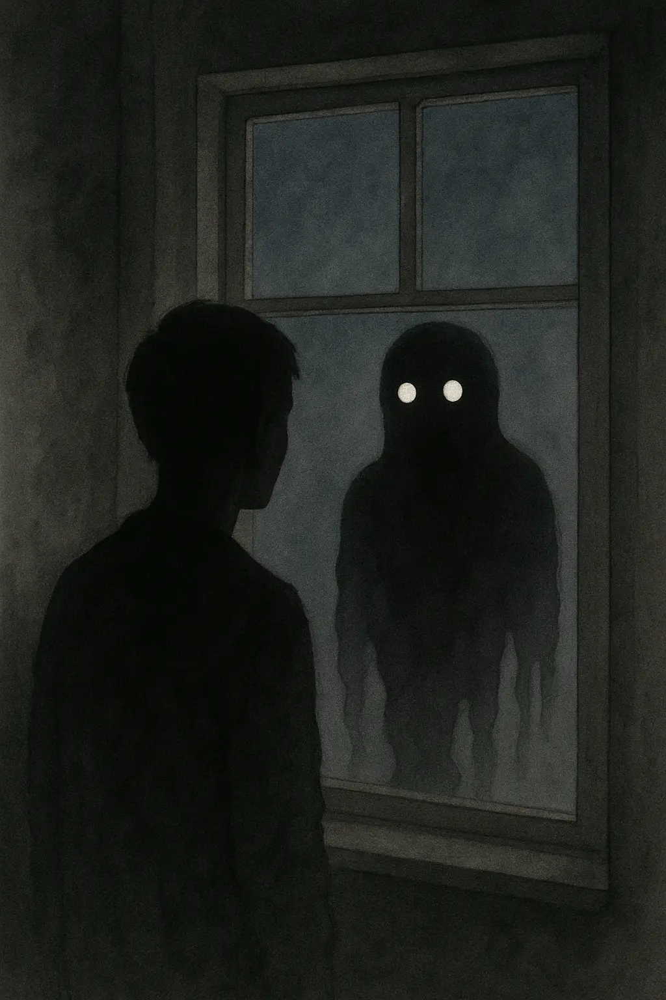
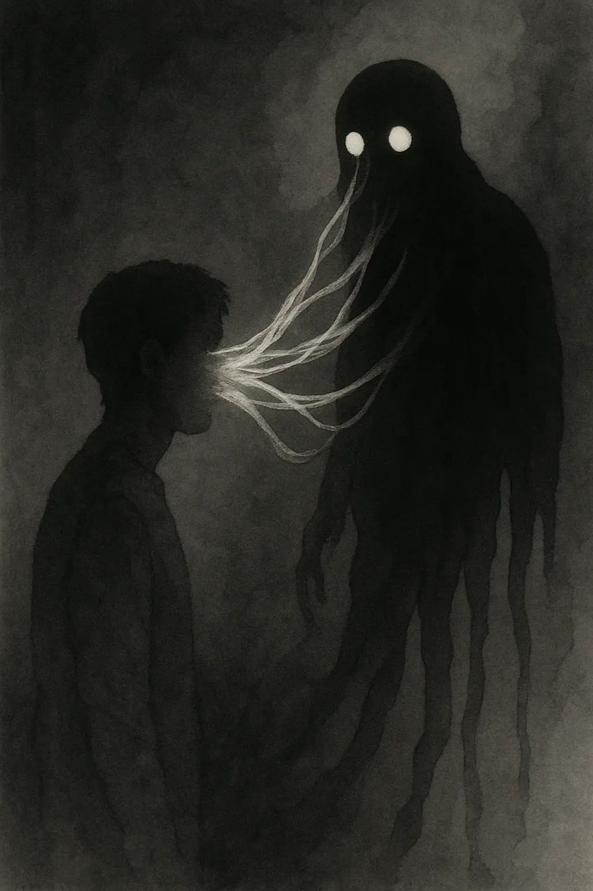
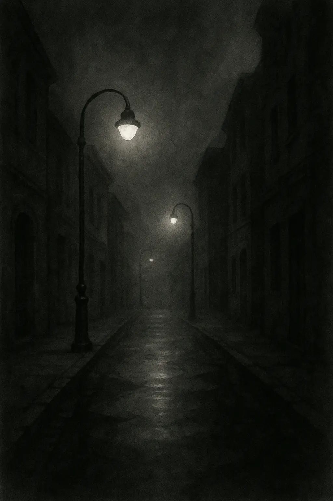
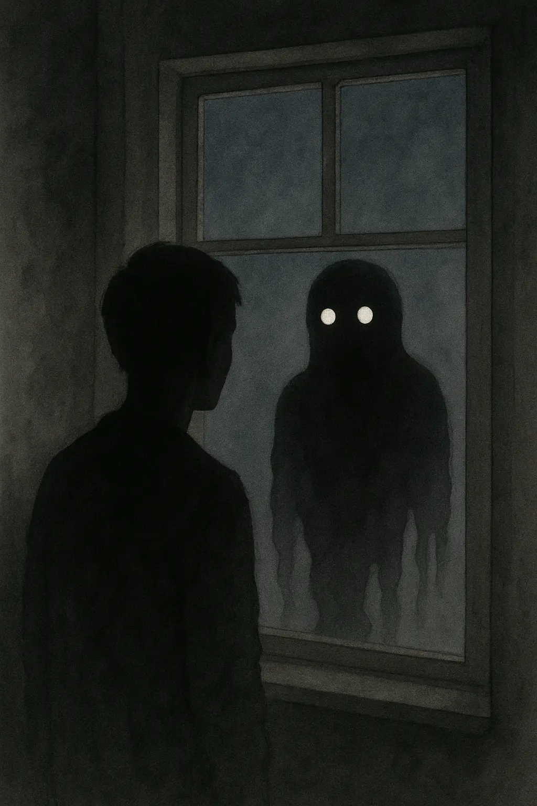

BRUGERGRÆNSEFLADEUDVIKLING
I dette tema arbejdede jeg med udvikling af brugergrænseflader ved hjælp af HTML, CSS og JavaScript. Jeg lærte at designe og implementere UI-elementer, arbejde med vektorgrafik og skabe interaktive funktioner. Derudover arbejdede jeg med visuelle koncepter, typografi, farver og dokumentation af designprocessen.
 





PROCES
I dette tema arbejdede jeg med udvikling af brugergrænseflader ved hjælp af HTML, CSS, JavaScript og Adobe Illustrator. Processen startede med idéudvikling og skitsering af UI-elementer samt udvikling af et visuelt koncept.
Jeg arbejdede med vektorgrafik i Illustrator og anvendte moodboards og style tiles til at fastlægge farver, typografi og formgivning.
Herefter arbejdede jeg med implementering af UI-elementer og funktionalitet ved hjælp af CSS og JavaScript, herunder interaktioner, transitions og simple animationer.
Figma
LØSNING &
LÆRING
Den færdige løsning indeholder interaktive UI-elementer og funktionalitet, der understøtter brugeroplevelsen og gør interaktionen med siden mere intuitiv. Animationer og bevægelser er anvendt med omtanke, så de bidrager til forståelsen af indholdet og guider brugeren uden at virke forstyrrende.
Gennem arbejdet med temaet har jeg opnået en større forståelse for samspillet mellem design og funktionalitet. Jeg har fået erfaring med at omsætte visuelle koncepter til fungerende digitale elementer og lært, hvordan tekniske løsninger kan understøtte det visuelle udtryk.
Derudover har jeg lært at arbejde mere struktureret med JavaScript og fået en bedre forståelse for, hvordan animation og interaktion kan bruges som funktionelle elementer i brugergrænseflader. Temaet har givet mig større sikkerhed i at kombinere design og kode i én samlet løsning.
Se færdig løsning